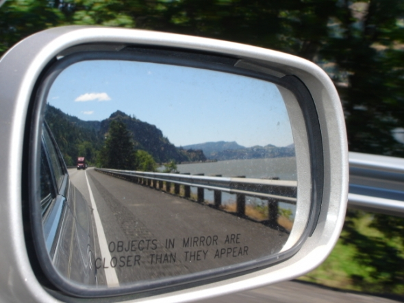
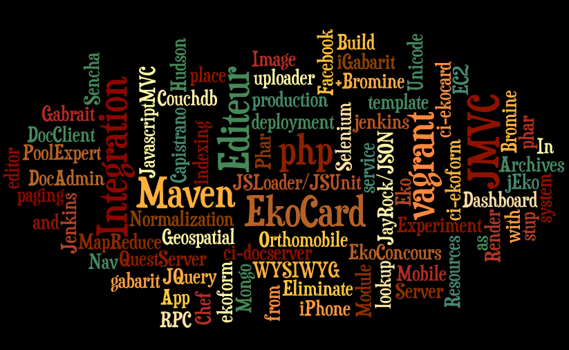

L'innovation chez Axial
Lunch and Learn - 21 déc 2012
par DrDan
Lauzon /
@daneroo /
g:daneroo
L'innovation
I see no advantage in these new clocks. They run no faster than the ones made 100 years ago.
― Henry Ford
C'est quoi pour vous ?
Regard sur mon séjour
après 2 ans, beaucoup de projets, d'amitiés,...
un gros merci!
Forces d'Axial
les choses peuvent etre mieux
ce qu'on fait de plus, et de moins...
artisan, utile
espace/encouragement pour ameliorer
entre nous / 4 murs-8 murs
age de l'information: collaboration tres large
Gérer le changement
Est-ce qu'on peut en faire trop ?
Laisser l'idee maturer
Bien communiquer les objectifs communs
Qui, Quoi, Quand
Les blocs
les succès
mais aussi les erreurs
Timeline
2010
- jan-mar - EkoConcours:
- Passage a javascript front-end
- JSON - mssql blob
- EkoGabarit - Edition en place
- avril - Best Practices
- Javascript Loader
- Javascript templating
- avril - EkoConcours Facebook
2010
- avril - iPhone audio stream
- Premiers pas en mobilite
- mai - Ekolib - jsonRpc
- juin - jEko & Quest Service
- JayRock JSON-RPC_PHP
- juillet - jQtouch PoolExpert
- sept/oct - Module Resources - SIB
- MongoDB - DocServer
- Twig Templating
2010
- novembre - Hudson CI - maven php
- decembre - Orthomobile - Sencha Touch
- decembre - Ekocards - DocServer
- decembre - Ekoforms - QuestServer - DocServer
2011
- janvier - deployment - dev-ci-prod
- janvier - eliminate maven
- fevrier - JSMVC ekorender
- mars - Ekoform - capistrano - bromine - jenkins
- avril - Ekorender -JSMVC components
2011
- avril - vagrant ekoforms
- mai - Ekoforms@git
- mai - geospatial lookup
- juin - vagrant ekoforms en equipe
- juin - CouchDB Pool Expert
- juin - jQ mobile & templates
- juillet - ekomobi proto live enprod
- septembre cloudfoundry, kissmetrics, loggly
- octobre - mccloud ekomobi ec2 live
- '12 fevrier - phantomjs static site/thumbnails
- '12 mars - ekomobi vote gala
FIN
Questions ...
Commentaires ...
par DrDan
Lauzon /
@daneroo /
g:daneroo